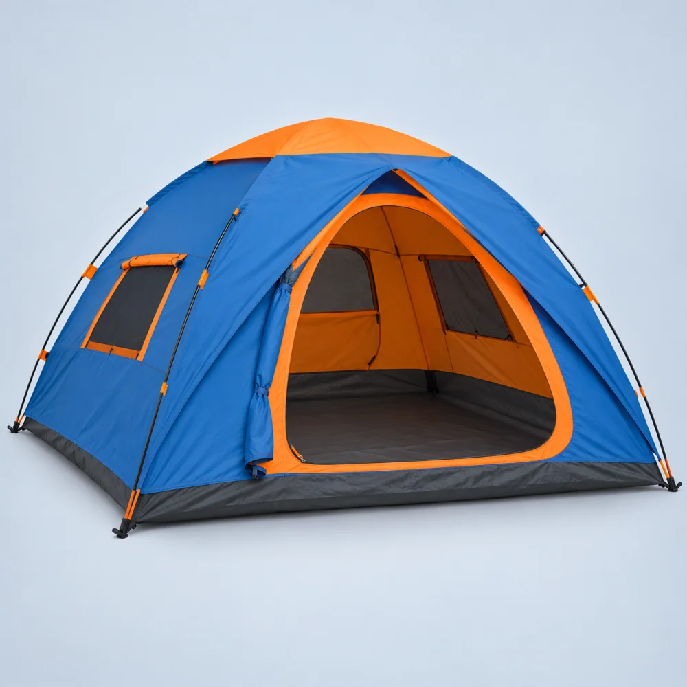
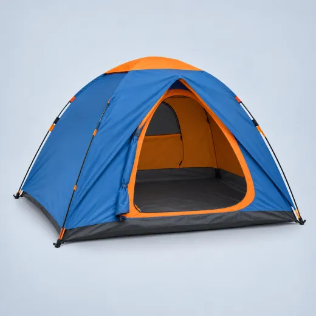
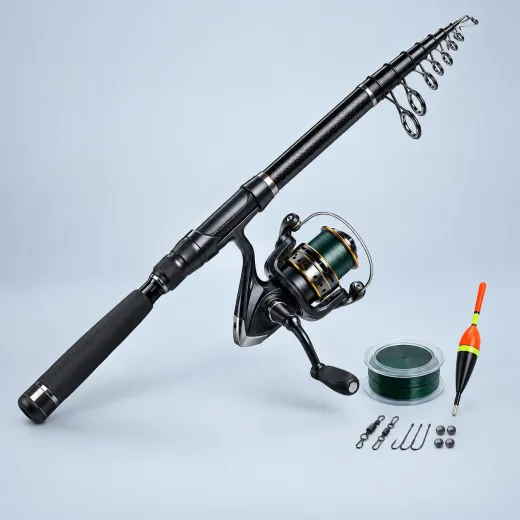
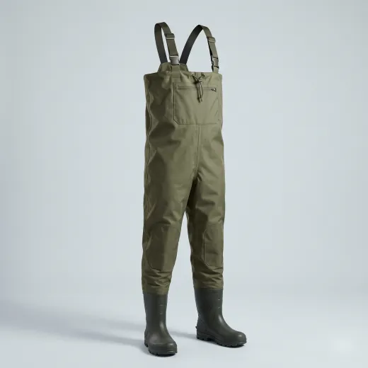
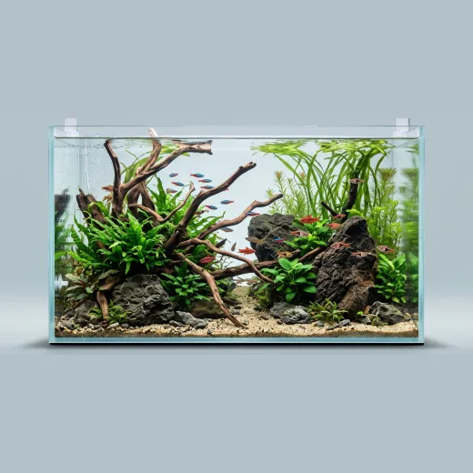
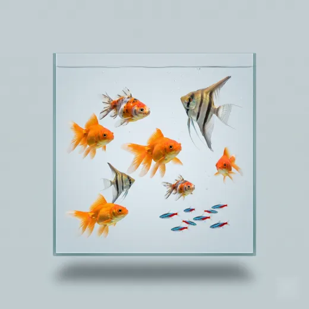
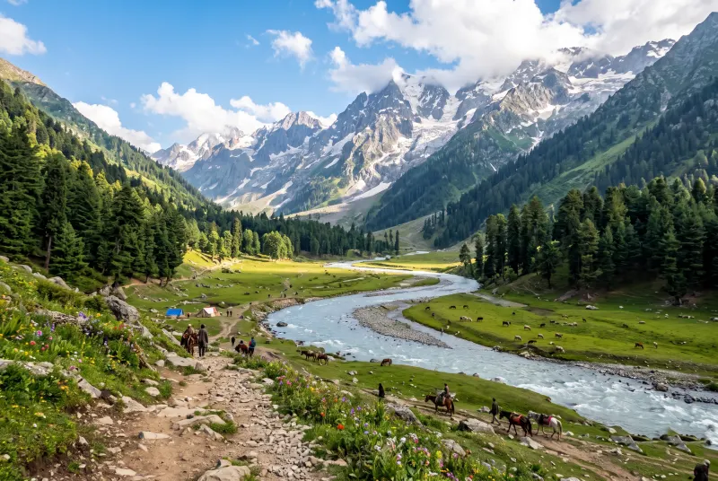

About us
Montage Traders
Your outdoor and aquarium shop in the heart of Srinagar — for the mountains, the rivers, the lakes and your home.
Who we are
Everything for the outdoors, under one roof
Montage Traders is a fishing and outdoor shop at Lal Mandi, opposite the Agriculture Complex in Srinagar. We bring together the gear people in Kashmir need for a day by the river, a night in the meadows or a beautiful aquarium at home.
From a first fishing rod to a full camping kit or a 60-inch aquarium, you can see it in our shop, ask questions and take it home the same day — or order it here and we'll confirm on WhatsApp.

What we do
Everything we offer
These are the shelves of our shop — and the help we give with each.

Dome tents for 2 to 8 people, folding chairs and the basics for a night outdoors. Colours may vary by stock.

Jianggan, Shimano, Semi Corban, Diao Wong and 2-piece combos — plus floats, hooks, line and landing nets.

Waterproof chest waders with boots for cold rivers, and life jackets for boating and water sports.

Glass aquariums from 12″ to 60″ and healthy ornamental fish — goldfish, angelfish, tetras and more.

Equipment for fish keeping and fish farming. Tell us what you need on WhatsApp and we'll check availability.

Heading to Sonamarg, Tarsar–Marsar or Gangbal? Tell us your plan — we'll help you pack the right gear.
Who we serve
Made for everyone outdoors
How to buy
Three easy ways
Come to Lal Mandi, opposite the Agriculture Complex, Srinagar. See the gear, ask questions, take it home.
Add items to your cart and check out. We confirm stock and delivery on WhatsApp — pay by UPI or cash.
Send a photo or a list of what you need. We reply with availability and price.
Why Montage Traders
What you can count on
Good questions
Before you buy
Where is your shop?
Opposite the Agriculture Complex, Lal Mandi, Srinagar, Jammu & Kashmir 190008. Tap “Visit Us” for the map.
Do you deliver?
Yes. We confirm delivery and charges on WhatsApp for your area before sending.
How do I pay?
Cash on delivery or at the shop, UPI (GPay, PhonePe, Paytm) or bank transfer — after we confirm your order.
Do I need a permit to fish in Kashmir?
Yes — fishing in Kashmir’s rivers and lakes needs a permit from the J&K Fisheries Department. Get it before your trip.
Can you help me set up an aquarium?
Message us with your room size and budget and we'll suggest a tank size and fish to start with.